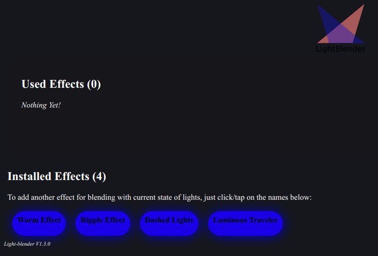
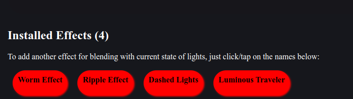
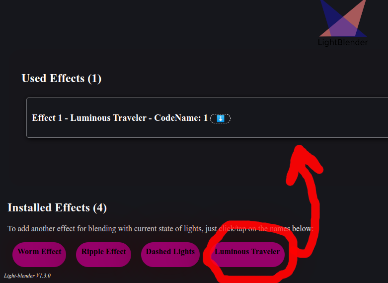
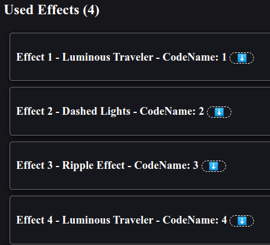
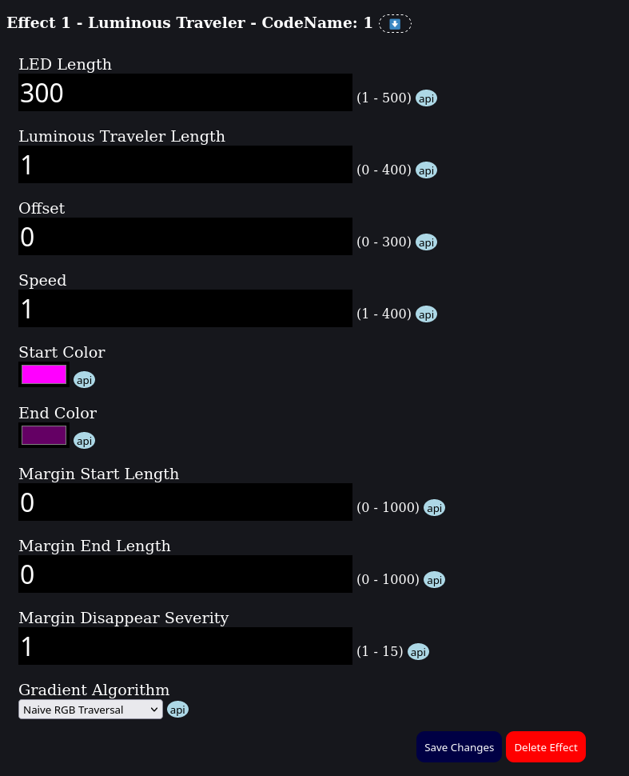
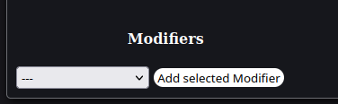

LightBlender is a system that users can uses installed or pre-installed effect and effect modifiers, to create their own desired effects. This will help both artists and non-artists, to have their own effect design system.
Light-Blender comes with a administration page like below:

As you see in picture above, you have some effects on light-blender. Some of them are pre-installed on light-blender and some other effects are installed independently.
Just a look at the bottom of administration page. You will see the list of available effects to use.

Each effect usually comes with a its own documentation. So try to read them if you are interested in learning more about them and their usage.
To add a new effect, click/tap on them to add an instance of it. For example, assume we want to add a new Luminous Traveler effect. To achieve that, you will need to click on Luminous Traveler button, and you will have an instance of it immediately.

You can add multiple effect. LightBlender will mix selected effects together and generate a mixed effect of them.
Remember: you can select same effect multiple times, As you can set different parameter for each effect, this can be useful for you. In picture below, Luminous Traveler selected twice, And this can be really useful in many use cases.

When you select an effect to use, you can click on each used effect to open editing menu and then set your desired parameters for them.

Effect modifiers can be apply on effects and make changes in them.
Effect Modifiers, can be add after you create an effect. Open target edit settings by clicking on the name. in bottom of the opened section, you can add modifiers from dropdown.
